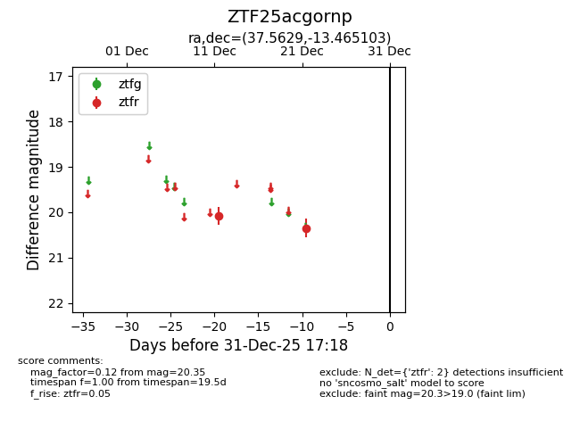
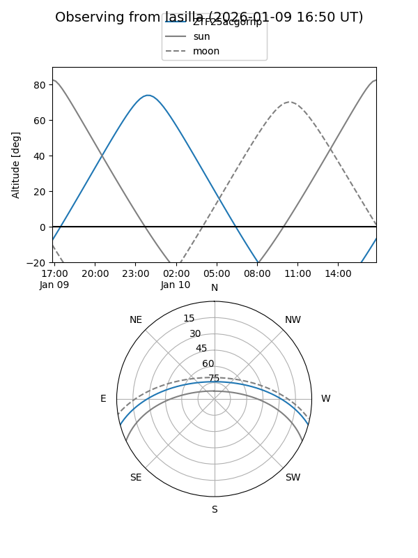
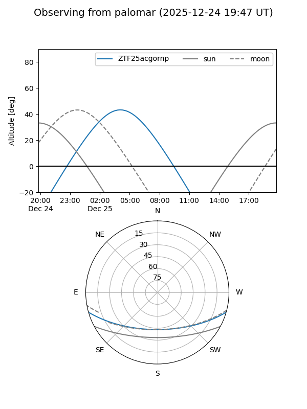

ZTF25acgornp
Target ZTF25acgornp at 2026-01-09 12:49
Aliases and brokers:
FINK: link
Lasair: link
ALeRCE: link
alt names
ZTF25acgornp (ztf,fink_ztf)
Coordinates:
equatorial (ra, dec) = 37.5629,-13.46510
equatorial (HMS+DMS) = 02:30:15.10,-13:27:54.37
galactic (l, b) = (187.2288,-63.18799)
Flags:
Photometry:
last ztfr=20.35
2 ztfr detections
Lightcurve

Visibility


Additional plots